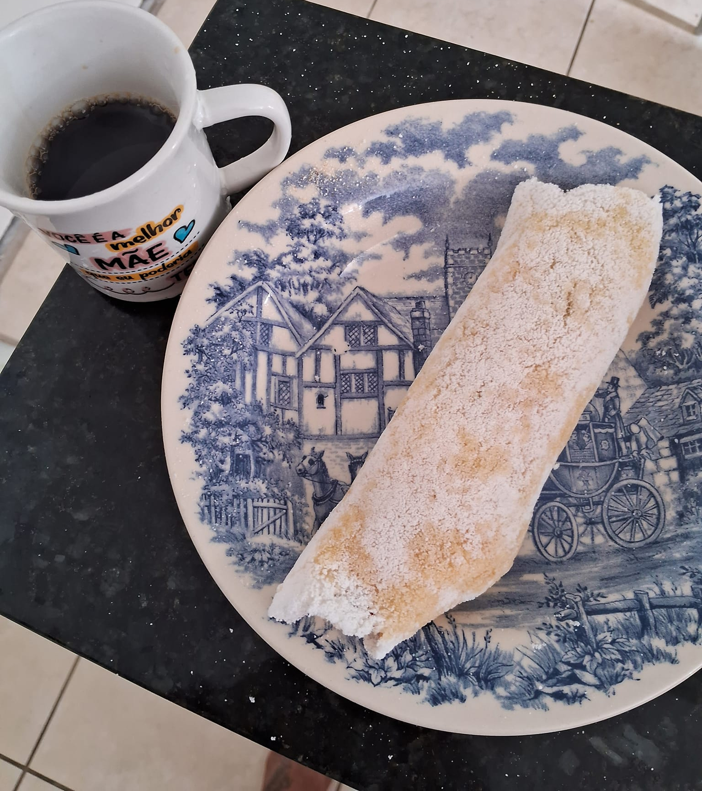

Como fazer uma tapica?

Descrição
Ingedientes:
- goma de tapioca hidratada
- 2 fatias de queijo mussarela
Modo de preparo
- Peneire uma porçao de goma de tapioca hidratada em uma vasilha
- Pré-aqueça a frigideira, de preferência antiaderente
- Com uma colher, polvilhe a tapioca na frigideira preenchendotoda sua superficie com a goma.
- Passe a colher sobre a tapioca para que um lado não fique maior que o outro, tornando-a plana e uniforme.
- Aqueça na frigeira por cerca de 5 minutos
- Depois, so adicionar o recheiro de mussarela e enrolá-la